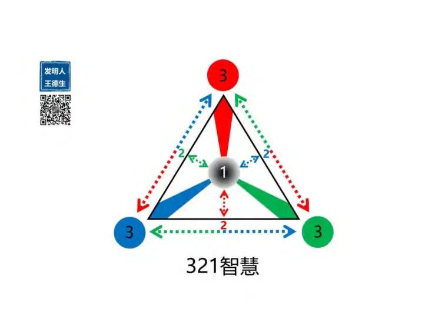
课程整理。（文章尽量保持“口语体和对话体”，蓝色字体是学生互动内容。）
【课程摘要】
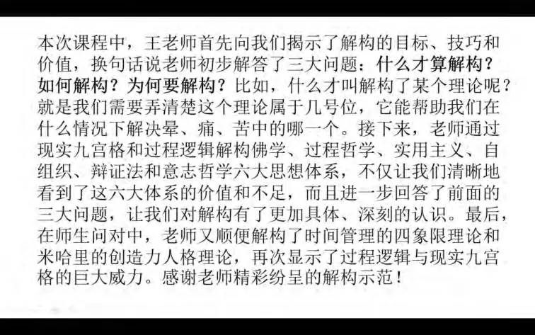
【关键词】
解构、现实九宫格、过程逻辑、思想体系
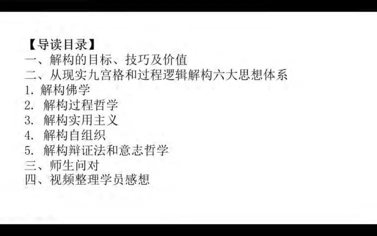
一、解构的目标、技巧和价值
今天的课是我们三视角智慧五年以来最强大的一次解构，你们也将学会怎么样解构，这
非常重要。如果你去看别人的学术论文，他在讨论某一个理论的时候，一定会讲他在哪个方
面是强点，哪个方面有缺点。那么缺点就是他试图要帮助我们解决人类的晕痛苦，但是他反
而带来了晕痛苦。这就是人类很大的问题，你不学三视角，你就必然会走到那里头去。
大家知道解构，我们使用的武器是个什么形状吗？
（三视角。）
三角形，知道不？那你一旦想到三角形，就要想到数学里面的什么东西啊？
（逻辑？）
这很简单，就一定要想到三个数，123，知道不？那么解构一套理论，实际上就是什
么？
（把它分出来，分成123，让大家看得清清楚楚。）
就是要把它挂在号位上，或者放在1号位、2号位、3号位。然后有的理论很杂，比如说
存在主义，萨特跟海德格尔他们挂的就不一样。海德格尔挂在3号位上面，但是他又不离开2
号位。萨特又把它挂在2号位，但又具有3号位。但是无论每个人，他都有个主位，记住了
吗？比如海德格尔，他的存在主义是3号位。
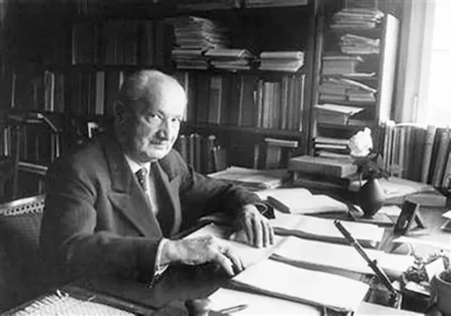
那么今天我们要解构六大体系，这个你们以前遇到过吗？
（没有。）
这里面既有Belief的体系F学、又有哲学、还有科学，是吧？当然我们说这个科学一定
是什么科学啊？这个科学它里面一定是有点伪科学的味道，懂吗？就是它有没有真正解释问
题啊？
（没有。）
其实我告诉你，今天的科学严格的来说，都是有问题的。所以你不要以为科学比其他东
西好像高级很多，没有那么回事。如果从解决人类的晕痛苦来说，你就会发现，科学给我们
带来了更多的痛苦。
好，那么解构的总体方针是要把那些东西挂在123号位上面。那现在我问你，如果它是
1号位，比如说西方哲学的理性主义是几号位啊？
（1号位。）
典型的1号位。它研究我们怎么样求得确定性的知识，普遍性、整体性、客观性的知
识。那么研究1号位的话，就必然要研究1号位的改变怎么样影响其他的因素，是吧？
（对。）
那么大家想一想，这种理论，它能够帮助我们人类解决什么问题呢？这个时候你要用哪
个九宫格？
（人类的问题就是现实，用现实九宫格。）
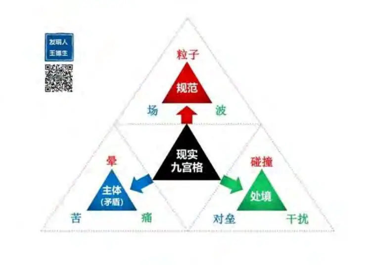
现实九宫格，它一定是要解决现实的问题。现实的问题不一定是说用眼睛看见的，比如
说你们两个在争论某个理论，是不是也是你们现实中的呀？
（对。）
两个THEOLOGIST家在争论，你说这个争论不是现实吗？所谓现实，就是人在知、意、
情的生活中遇到了晕、痛、苦。但是，如果你们两个在做梦，然后说昨天晚上你梦到的跟我
梦到的不一样，那这个有没有意思啊？
（没有在现实中形成晕、痛、苦。）
对，因为我们没办法去控制和计划今晚我要做什么的梦。比如日有所思，我们两个今晚
就做那样的梦，然后明天我们一起讨论那个梦，会不会这样做呀？
（不会。）
不会，很难的，知道不？我们做的梦是计划不了的。
那么理性主义，大家想一想，它对1号位的研究是要去帮助我们解决现实中的哪一个痛
苦呢？
（解决晕。）
对，解决晕，知道不？所以理性越强的人，仿佛死的时候，棺材是谁抬，是不是都得计
划安排好啊？
（哈哈哈。）
这个就是强理性主义，就是方向、目标、想要什么，都想得清清楚楚。如果你跟一个理
性主义的人生活的时候，你要预备接受哪几种不幸呢？就是理性主义的人能不能帮助你解决
痛和苦啊？
（不能。）
比如你那个菜炒不下去了，理性主义的人会不会过来帮你把这个过程里面的问题解决
呀？
（不会，他会说：“你慢慢来，你自己去摸索。”我们家的就是这么说的。）
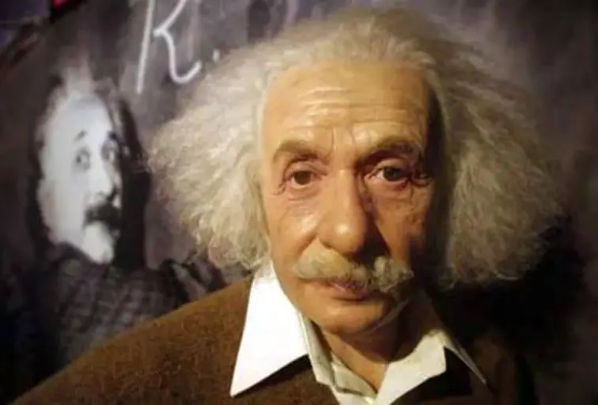
哈哈。理性主义的人也不会帮你处理关系，他会认为你遇到了痛，是因为你没有遵守那
个自然规律，没有遵守做事的规律。所以他觉得你如果找到了那个规律，这个痛就没有了。
那理性主义解决苦呢，他就会说什么？
（你换个环境吧。）
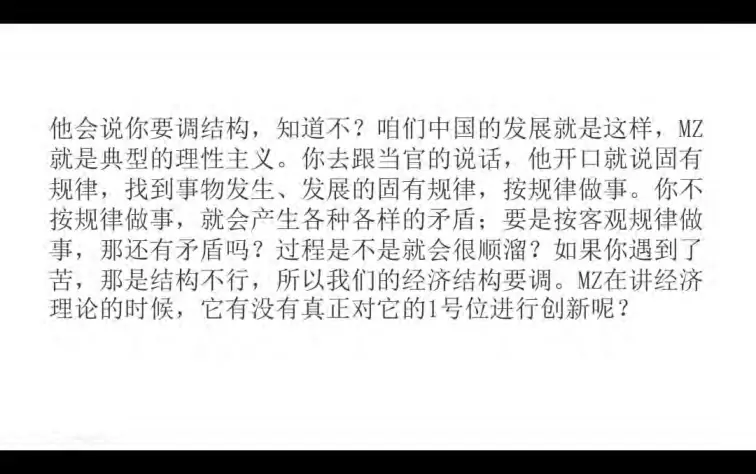
（没有。）
也就是说，理性主义总是认为他有一个绝对真理的1号位。
所以，我们如果要解构一个理论，解构的目标是什么呢？解构的目标就是这理论属于几
号位，它能帮助我们在什么情况下解决晕、痛、苦中的哪一个？但是，在更多的情况下，它
不仅不能解决，反而会因为另外两个给我们带来更大的问题。
比如，一个理论表面上帮助你解决方向，但实际上给你带来了痛和苦。当痛和苦两者积
累、矛盾起来的时候，就会使得你原来遵守的方向不得不做出改变。也就是说，理性主义自
己想要找到一个确定的东西，但是因为忽略了它给你带来的痛和苦，所以当你坚持一段时间
之后，你会发现那个确定的东西反而丢失了。这就是我们解构的目标，解构任何一个东西的
目标。
再比如，假使你要解构的一个理论，它属于2号位，你就要想想，2号位是要帮助你解决
痛的问题，它提供各种各样方法、技巧解决你的痛。但由于它忽视了晕和苦，那么就会造成
你的晕和苦越来越大，此二者会矛盾冲突，使得你的痛不减反增。同理，3号位的理论也是
这样的问题。这就是我们解构的目标。
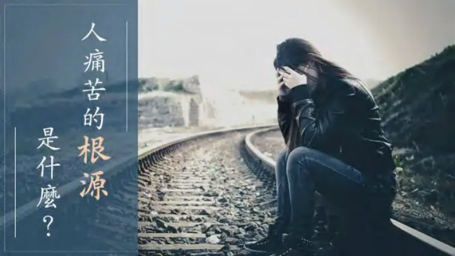
那解构的技巧呢？也就是说，解构从哪里出发呢？
（过程逻辑。）
没有固定的出发点，一定要记住！解构就是你要看那个理论，它缺少三视角里面的哪些
视角。就是它具有某些视角而缺失一些视角，它并不真正认识三视角的某些东西（视角），
但它又不得不使用那些缺失的视角内容，因此它就会在那个方面出现问题。
最近我所以使用过程逻辑解构西方哲学，是因为整个西方哲学在处理矛盾冲突的时候，
不得不遵守过程逻辑，可是他们对过程逻辑又不认识，因此必然出现错误。所以你解构的时
候，要剖析对方的理论不得不使用而又缺失的视角内容，对方没有用好哪些视角内容而不自
知，你就从那些内容出发，围绕那些内容来进行解构，这就是解构的技巧。
何谓解构的价值呢？解构绝不只是否定而已，解构是要发现该理论在这个视角上取得了
哪些研究成果。因为任何一个理论都解决了某个矛盾，因而在实践中，它必然预设了另两个
视角满足了什么条件，我们就要抓出来那两个条件，如此就能解释为什么在实际使用中，某
些场合下能凑效，但它隐藏了一些条件没有说。
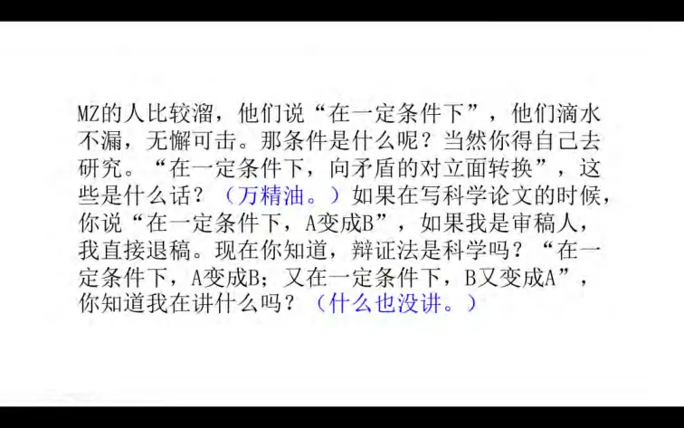
因此大家要知道，像这种万金油的话，你不要去辩论。你就说，我们就用你的理论来解
决一个现实问题吧！比方现在有一道数学题，我们来解一解，如何？在这个具体的数学问题
中，怎么分析主要矛盾、次要矛盾？当然他可能会用“具体问题具体分析”来挡。好吧，那
我们现在就这个具体的数学问题具体分析一下吧。他可能回答：“这不是我（要解决的）问
题，我是做哲学的，这个可是科学的问题。”一脚把球踢出去。
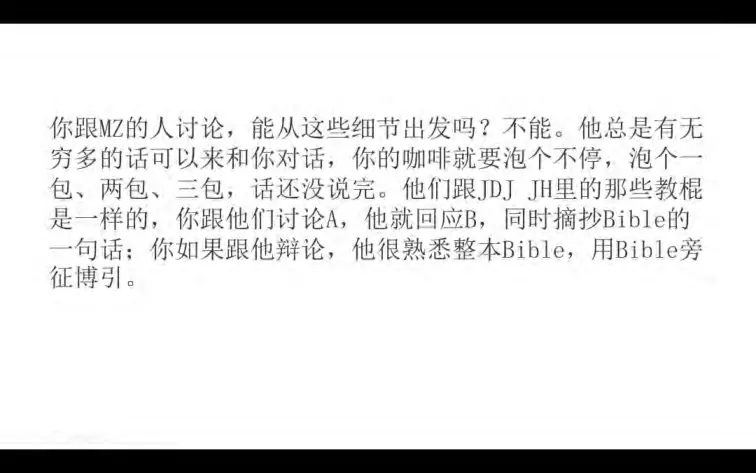
W老师跟他们不一样，W老师就是实实在在要解决晕痛苦。我的晕痛苦不是说没人跟我聊
天，没有人跟我辩论，那不是我的晕痛苦。
二、实践解构六大体系
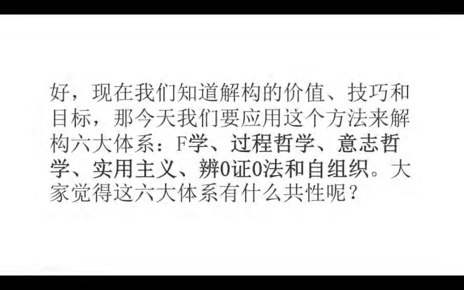
（都是 2 号位。）
对，它都是2号位，知道不？对，就是你要有直觉，懂吗？
所谓直觉就是什么？就是整体，懂吗？对，就是即使你不知道自组织，即使你不知道F
学，你都要知道它们是几号位，知道不？
那么2号位，你就想一想，这些理论都是要致力于帮助我们解决什么呢？
（解决痛的。）
对，解决痛的。就是他们解决了痛，但是会带来什么,会忽略什么？
（会忽略晕和苦。）
对，你有了这样的直观的目标的时候，现在你又要回到哪里？回到各个理论里面去。
1.解构F学
比如回到FJT那里去，如果你的朋友是FJT的时候，那你们觉得苦不苦？
（你还在苦海里，还在红尘中。）
你还在苦海里，是不是啊？是什么意思呢？就是FJT都要离开苦海容易吗？
（不容易。）
对，不容易。那么FJT有没有晕呢？你看这个F学，如果它只抓变化，只抓过程，就如
《JGJ》一开始就是忽闪忽闪，整个世界都在不停的变、变、变，是吧？然后有多少个法00
门呢？
（四万千法00门。）
对，四万八千法00门。现在你知道法00师就是帮你去什么呢？去痛的，对。你有哪一
种痛，哪个地方不通，他就给你什么？F学的重大成就就是什么？打通那条路,知道不？懂了
吗？哪个地方受阻了，他就帮你打通。
但是大家觉得他打通那条路的时候,他要用什么方法才能打通呢？比如说那个水管堵住
了是吧，那怎么通？
（两边的关系要处理好，你要把两边两头打通。）
我们用123原理解决矛盾是什么呢？就是你不能说现在你先通一下，过一段时间又堵
了，那样不行，知道不，对。所以你就会发现水管堵了一定是什么？它是波视角，那一定是
粒子跟场矛盾了。比如说那个石头比较大，它挤不过去了，就堵住了，是吧？
（卡在那里。）
对，如果水管那个场很大的时候，石头就滚滚而下，懂吗？
所以这个FJ，实际上它从哪里入手来解决你的痛？它从1号位和3号位入手，知道不？
它首先把你人生的方向和目标要什么？它是不是说你想要没有痛，你就要找到你的目标，好
好的研究目标，是不是？
不是的，F学的智慧你们不知道的，它是什么？比如你说：“我要做和尚，因为我老婆
说我做和00尚的时候她更喜欢我。”你会不会这样做？
（不会。）
所以他说你要什么？要把现实中的任何目标都什么？
（要拿掉。）
懂了吗？所以这个 1 号位给你处理掉了，是吧？这个时候你现实中的想要获得的只是
为了什么东西的生存就可以了？
（肉体的生存。）
只是肉体的最基本的存在就可以了，是吧？大家知道，如果只是肉体最基本的存在，这
个时候，这个 1 号位带来的问题是不是就少很多了，那人就比较简单了。所以，现在我们
叫做佛00系生活，是吗？
（简单点，别想太多了。）
这里只有面条，那我就吃面条，是吧？
（享受当下。）
对，如果啥东西都没有的话，那我们就什么？W老师说，现在就怎么？
（断食。）
好，这个1号位被他抹掉之后，那3号位这个场肯定也要什么？
（也要抹掉。）
也要抹掉。所以，这个时候你还能在现实当中生活吗？
（不能。）
对，你一定要离场，知道不？所以，你想要真正有幸福的FJT的生活，你就不能住在哪
里？
（城市里。）
你就不能住在城市之中，知道不？对，你要住在山边，是吧？总之你要离开那个城市，
离开农村，离开有鸡有鸭叫的地方，是不是啊？有鸭叫的话，你能不能坐在那里？不能！知
道不，明白了吗？所以F教是不是有很大的智慧，他把你的什么拿掉？
他把粒子和场全部去掉，粒子和场的变化一点都没有了，对。那他总要给你一个粒子，
所以这个粒子就是要把 1 号位跟 3 号位所有的冲突去掉，这样人生就没有什么了?
（没有痛。）
就没有痛了，这样人生的每一件事情都做得很顺溜了。对，既然你已经知道这个，那你
就应该反复地把这个东西去告诉别人,知道不?听懂了吗？
所以，这个时候你的人生目标就是什么？去研究的这两个东西怎么样影响那个痛，知道
不，懂吗？然后再把这一套传智慧传播给其他人，这就是你的粒子，你的人生目标。所以
FJT的人生目标就是做一个完全人，把其他的人从痛海中，不是苦海，是从痛海中救出来。
这样做事情的时候就会很顺利。知道不？
因为在FJ这个金00刚00经里面，它是没有粒子和场这个东西的。懂吗？它只有什么？
一切都是法，法是什么？法就是过程，一切都是过程，一切都在变化，明白吗？没有所谓静
态的东西，没有所谓固定的某个场，因为所有的都因00缘连在一起。听懂了吗？
所谓的静态的场、静态的粒子，都是人为切出来的，这个人为切出来的这个就叫什么？
相00由什么？
（相00由心00生。）
懂了吗？比如你说：“我看到了一个人。”FJ徒会说：“不是，这是你切出来的。你为
什么这么切呢？因为你有某种欲望。”所以这时候你在场上面、在欲望上面，就要修炼，要
抑制，要简单，懂了吗？
如果现在有F00学大师看到你左边一个手机，右边一个电脑，手上面还有名牌的挂饰，
那就要来一场F00学大revolution了！
大家说这个能不能真正帮助我们解决人生的晕痛苦啊？
（不能。）
很显然，它能帮助一些。什么意思呢？如果FJT明白这个智慧，他可以跟别人说：“你
要解决痛，你就要把你的晕和苦怎样？”
（拿掉。）
对！你的方向和目标尽量少。就是人能不能说我要改造世界？
（不能。）
人必须做个空的。所以F学里面能不能出现创造力呀？
（很难。）
现在你就知道，F学不可能出来科学。因为只要你想要发明创造的时候，那你就是有目
标了，特别是你还想Liberate全人类，是不是这个目标就更有问题了？
大家看到了F学本身的自相矛盾吗？F陀说：你们的任务就是去PD众生。
（这也是使命啊！）
不是，其实F陀并没有让大家去PD众生，知道不？这就是F学里面不可解决的矛盾。F陀
对他的弟子说，不要想着我来帮助你们，每个人成F得靠谁呀？
（自修）
依靠自己吧！如果你说我要去帮助别人的时候，无形之中那个目标是不是就来了？
（又有欲望了。）
那个1号位就很强大了，是不是？所以这个痛就会怎样？
（这个痛就会加剧。）
这个痛就源源不断地来了。
所以，现在大家知道，这些只要是视角中心的，无论什么信00仰都最终一定是自相矛
盾，最终他只能帮助某些人。那些正好符合条件的，他就怎样？
（有作用。）
比如某些人官场失意，情场失意，婚姻失意呀。这个时候就怎样？
（遁入空门。）
那些遁入空00门，进入寺00庙的人，其实跟很多在JH里面的JDT是一样的，还是带着很
多的晕，痛、苦。他要说服自己的是：“我来这里并不是比别人少很多晕、痛、苦，而是我
不来这里的时候，我的晕痛苦比现在更多。”懂了吗？信YS的人也是这样认为的！你信了YS
之后，并不是说你的道德品质比别人好，而是说你不信的时候，你的道德就比现在要差，信
之后，你这个人比以前要好。
大家想一想，真的是这样吗？有一些人是这样，但是，这绝对不是普遍规律。有些人不
信的时候可能还会温柔说话，信了之后，随你讲什么话都邦邦硬的，知道不？
现在你就知道F学到底是什么智慧了吧？F学其实告诉你，你要去痛的时候就要从哪两个
角度着手啊？
（晕和苦。）
F学就是研究怎样处理1号和3号，改变1号和3号，使得每一个运行过程就通畅无阻。所
以就形成了几万法00门，知道不？这是大智慧阿！
举个例子，如果你请一个F师，跟他说：“我们家水管堵了，怎么办？”他就会告诉你
从1号和3号来分析问题。堵了，从粒子上来说，是不是你把一些纸、石头等东西扔进去了？
如果你里面都是水的话，怎么会堵呢？他会从场的角度问，是不是水管里面累积了很多东西
呀？这时就要你检查这两个方面。你检查完之后，果然发现了问题。这时你是不是觉得这些
学Fo的人很有智慧呀？
（嗯。）
但是大家想一想，什么问题他不能处理？就是痛也有三个角度的痛，明白吗？比如说头
痛，肌肉痛，胃痛。这三种痛是不是不一样啊？
（粒子、波、场不同视角。）
如果是F教00徒，治理肌肉痛很容易，但是对头痛和胃痛，他就不知道怎么办了，明白
吗？什么意思呢？比如说佛00教的人能不能治疗那几个F系派别内部争论的痛啊？
（不能。）
就是F学自己的理论产生矛盾，推理推不下去的时候，他能不能解决这个呀？不能。就
是我们说的头痛不能治，胃痛不能治。我不能讲太多了，六大体系，F学我已经讲了40分钟
了。
2.解构过程哲学
好！我们再来讲过程哲学，过程哲学也是一样的，怀德海说这个世界全部都是过程，一
切都是过程。过程哲学和F 学很类似。过程哲学在21 世纪开始兴旺了，但最开始上个100
年，没有人理睬它。现在，因为后现代主义把什么东西打死了？
（本质？）
把粒子都打死了，所以大家都开始研究存在主义海德格尔的场 。后来大家觉得也不行
了，所以大家就转向了过程。
（波，过程。）
对，一切都是过程，一切都是发展。整个宇宙就是在源源不断的不停的变化。所以过程
哲学又要用科学里面的自组织这些东西。
那么大家想一想，如果你觉得一切都是过程的时候，如果你要用过程哲学过人生的时
候，你就觉得你每天就是在做什么事？
（吃、喝、玩、乐，更好生活。）
你就会感觉你每天都在不停的运动一样的。你看你睡觉，是不是因为你的身体在运动，
你睡觉的时候免疫系统在那里咔嚓、咔嚓、清理、清理是吧？
就好像你做一个公司一样的，你就会发现公司的人员下班了之后就应该让谁来了？公司
的人下班了，就应该卫生员来打扫卫生，是不是？对，如果打扫卫生有几拨人，你就说晚上
分成三个小时，一些人打扫卫生，一些人洗空调是吧？因为你要求很高。早上的时候叫一些
人再来换你办公室里面的花草，因为你要求鲜艳的花。这个时候你就会发现，你安排你公司
里面的一些业务的时候，都是按活动在那里24小时连轴什么？
（转。）
对，连轴转。
我就觉得现在的人，过程哲学越来越厉害了。那么过程哲学它就必然要研究矛盾的什
么？
（连接。）
研究矛盾的处理是吧？一个矛盾来了之后怎么样处理。过程哲学的人其实最怕的是什
么？
（问问题？）
最怕的就是过程给堵住了嘛，是不是？所以过程哲学的人，他最害怕的就是什么？就是
痛。因为一旦堵住了之后，这个过程还能进行下去吗？所以这个时候你就要加强对过程的研
究是吧？各种各样过程的研究。这个时候对过程的研究，你最希望得到一个什么？你觉得让
过程能顺利的进行下去，最好的方式是什么？
（把那个粒子和场给他们理顺。）
不是。
（把这个程序给定了。）
对，把一切的过程程序化，然后要把矛盾什么？
（矛盾固定。）
矛盾要固定呀。也就是说过程只是处理痛，对头痛怎么治，肌肉痛怎么治，胃痛怎么
治。也就是说怎么样梳理它们是吧？对，你就要把它程序化，一遇到堵住了就这样做，一遇
到堵住了就这样做，一直这样做。明白了吗？
（嗯。）
那就是说你的生活就安排的什么？
（每天都满满的。）
（井然有序。）
不是满满的，是井井有条。所以你看，你们对晕痛苦的感觉都不一样，是不是？一个人
是满满的，一个人是井井有条，是吧？
（哈哈、哈哈。）
大家想一想过程哲学的人他要致力于什么？就是对各种不同的痛，怎么样去找到矛盾的
解决方案、解决路径，然后给它固定下来。遇到某一个问题的时候立即启动那个方案，这个
时候你就会发现那些公司章程化、规范化、案例化，就井井有条。
那么过程哲学的人什么时候就没问题呢？
（就是这个矛盾是原有的矛盾的时候，不发生问题。）（设定的场不变。）
就是他设定了场和粒子，知道不？他设定的场能不能有突变呀？
（不能。）
很简单嘛，CD的抗Y，多久要做一次HS，现在是不是都流00程化了？
（对。）
然后各个城00市普00遍推行，成为流00程化。但是如果突然之间地00震的时候，就不
知道怎么办了，是吧？
（启00动紧急预00案。）
这个时候你再怎么启动紧急预00案也不行，知道不，懂吗？
（突00发状况无法预知。）
紧急预00案只能是面对那些小的场的突变，大的场突变的话你是无法的应对的。
（束手无策。）
这个就是告诉我们过程哲学，他讲过程，但是他真正明白过程吗？
（不明白。）
不是，他缺少过程逻辑。
一切都是过程，按照规律做事的时候，他最怕的就是场和粒子发生突变，是吧？
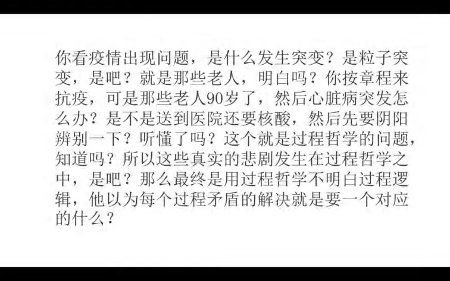
（方案。）
固定的方案。他不知道这些方案其实是在一定的场和粒子的预设下，才采用这种经常化
的方案选择，才能形成痛的顺利解决。
所以你就会发现，今天的工业、今天的企业管理，你是工业产品的企业可以用过程哲
学，是吧？但是你都要预设经济大环境，你还要预设你们企业里面的工人能不能发生改变
呀？不能。但是如果你是在知识经济下，可不可以？
（不行了。）
知识经济下可不可以？
（没法创新，没法有新产品。）
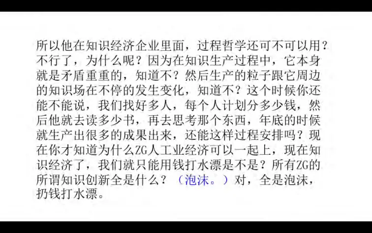
3.解构实用主义
好，再来，第三个，你们解构一下实用主义。这个2号位是从真善美的角度来讲的，不
过，你们还是要从这个现实九宫格出发才行。
那实用主义它在现实九宫格里面，它是强调解决矛盾，跟我们一样，也是强调矛盾，也
是解决痛。那它的问题就是它有一个断言，实用就是真理。就对我有用就是真理，没用的就
不是真理。这样的话它会带来一个更大的痛苦。
因为当你去判断这个东西有用没用的时候，你一定预设了你已经有这个1号位的这样的
一个标准，大家想想是不是？但是你凡事都是用‘实用’这个2号位来去判断的时候，那你
这个1号位一直没有更新，那这是不是你的痛苦将来会越来越大？大家能不能想一些例子，
那我觉得往这个方向解构，应该是对的。
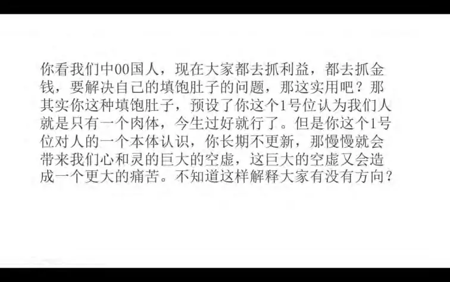
你们要去思考实用主义在什么情况下无法进行下去。知识是真的一定要用来解决现实矛
盾，但是反过去不一定对，知道吗？
（解决了矛盾不一定是真理，是吧？）
对，你不能说解决了矛盾的就一定是真理，因为反过去就是你把这个当做中心主义了。
我让大家举个例子，就是在什么情况下，实用主义会引起内部冲突无法实行？那在个人
上面它也会发生冲突，在群体也会发生冲突。不是说实用主义这个政策就一定能够能进行下
去。
因为实用主义是说只要解决了矛盾就是真的。然后，是真的一定要能解决矛盾，记住这
一点，它有个‘一定’。什么意思呢？就好像如果你说你生产了数学知识，那你就给我看一看，能不能解决矛盾，是吧？然后如果你不能，那我就说你在空谈，是吧？
那很多人是不是说W老师的三视角是空谈？你这个三视角都不能解决我的矛盾，那你就
是空谈。你看，这就是典型的实用主义。
大家想一想，实用虽然它是2号位解决矛盾，但是它忽略了什么？它忽略了过程，懂
吗？这就是我们经常回答的：‘现在没有用，将来有用！’那这个时候是不是就争吵起来
了？
（就是实用这个矛盾也是一个发展过程，但他是静态的来看矛盾，是吧？）
对，他就是静态的看矛盾。也就是晕痛苦不是三个同时都发生，明白吗？晕痛苦往往可
能是现在晕了，可能然后就痛，然后过段时间就苦，知道不？你们家里是不是经常这样，比
如说你没赚到钱买不到东西，没有直接就痛，而是隔了好多天，然后吃不到蔬菜的时候，这
时候便秘才痛，是不是？
（对。）
它有一个发生、发展的过程，就是现实九宫格晕痛苦是三个视角，它有一个晕痛苦的过
程。
还有一个问题，你在企业的时候，比如说三个人在一起做一件事的时候，你就会发现同
样一个矛盾，同样一件事情，对你是晕，对他是痛，对他是苦，这个时候能不能一起解决?
（不能。）
比如说你这个人受不了苦，那一点点苦对你来说是极度的苦。然后，那这个人是受不了
痛，一点点痛就说痛死了，是不是？你们的忍耐度不一样。
你看你们每个人描述的时候是不是都觉得现在我在受苦，我在痛，我在晕？但实际上根
据现实九宫格，晕痛苦是因为你的忍耐度都不一样，但是因为晕痛苦，它不是同时侧重，但
是又是同时发生，懂吗？就是你的晕痛苦一定是连体的，只是这个矛盾的发展过程中的时
候，他现在侧重晕，现在侧重痛，现在侧重苦。但是在团体的时候又和每个人的耐受度有
关，懂了吗？
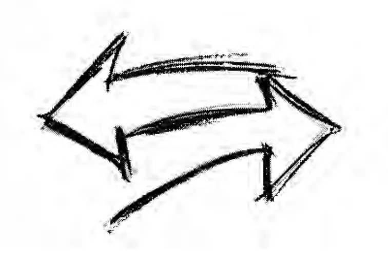
如果在发展的时候，对你们两个人，这个晕是很小的，因为你们的耐受度很大，可是另
外一个人耐受度很小的时候，他就觉得很晕。你看这个时候你就会发现，在这个矛盾发展过
程中，你现在是以晕为主，就是场和波发生冲突；但是你会发现同时另外两个人也痛也苦，
他们对晕的忍耐度比较大，那他们两人就会觉得现在的主要矛盾是痛是苦。
所以现在你就知道辩00证00法那个主要矛盾，他抓的出来吗？抓不出来的。你看你们
家里出问题，是不是也会是这样，如果各自都觉得自己是主要矛盾的时候，那这个时候你们
从哪里下手，听懂吗？这就是实用主义的问题！实用主义只是根据这个主体对他这个晕痛苦
的一种感受来去决定。
（对对，而且矛盾！）
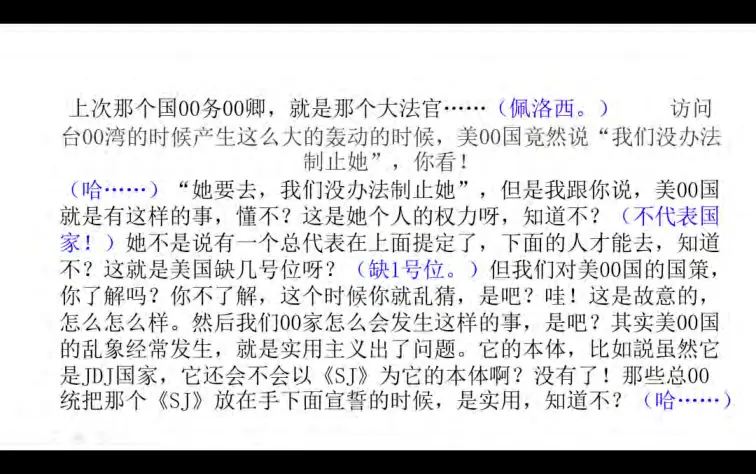
如果我不敢宣誓，下面的人就会说我，就是这个意思！所以，我们刚才说了什么？实用
主义，你要理解到这个深度的时候，你才知道实用不是真理。就是真理在一定程度要实用，
要解决矛盾，但是因为矛盾是要有三个视角的，知道不？也就是矛盾本身之间也什么呀？
（也矛盾。）
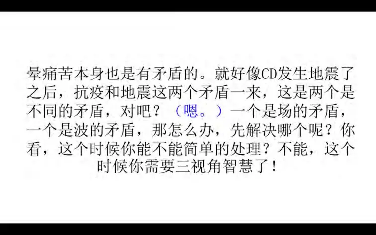
那我们的人生也是一样的，特别是你的身体。你要是发现，“哇这个地方痛”，你看有
的人就是头晕啦，脚痛啦，还有就是苦呀，知道不？这个时候晕痛苦全来了，怎么办，先从
哪里下手，简直没办法，是吧？
（嗯。）
很多人真是这样的。以前我那个姐姐就是这样，在晕痛苦中，那医生怎么给你处理呀？
你不可能说，这两套药治晕，这两套药治痛，这两套药治苦，然后你一股脑儿就放到胃里，
可不可以？
（新的晕痛苦又来了。）
对！所以大家记住，晕痛苦本身也是三个视角，它们也是矛盾的。所以在本体论的指导
下你才知道，现在是发展到哪个阶段，知道不？
比如说公司里面，我们探测到这个的晕痛苦，是因为你们两个人的耐受度不够。这个时
候主要矛盾是痛，那你们两个人对晕和苦很难忍受的时候，你都必须什么呀？必须忍，知道
不？所以你就发现在公司里面，你能不能满足所有人的需求呀？
（那这么说，那些所谓的公平、平等呀，也是一个伪命题啊？）
没有，哪里有呀！
（哈……）
你不可能同时解决问题的。就是我现在要解决这些问题的时候，另外两个角度的人就要
忍住，是不是？
（嗯，要舍己。）
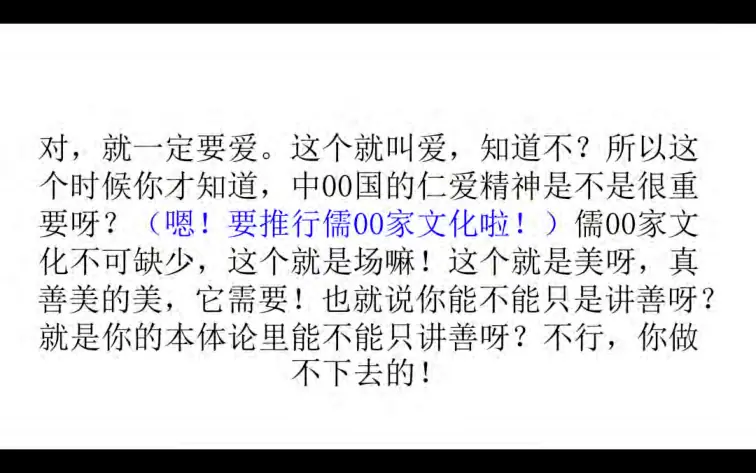
大家想一想，我们把实用主义解构到这种程度的时候，你以前听说过吗？
（没有！）
这是很重要的。因为以前我们总觉得实用性就是真理，这玩意就是真。但是它又告诉我
们，真要具有什么性呀？具有建造性，知道不？但是建造的时候你会发现，建造的时候也是
要有顺序的，知道不？
（矛盾推动！）
我现在先处理你的问题，你们那两个人先忍一忍好不好，是吧？这在我们的日常工作中
是不是经常是这样？你们同时跟领导说“我这个要处理”“我这个要处理”……那领导说你
把我切成三块，也不行，是吧？切成三块不行，三个部门也不行。大家知道为什么不行吗？
因为它在同一个流程、同一时间里面，只能侧重处理一个矛盾。
（处理一个矛盾！）
嗯，那当然你没有三视角，你能知道我在讲什么吗？
（不知道！）
对，好！那么实用主义我们解构了，我们已解构三个啦！
4.解构自组织
现在我要你们解构一下自组织。
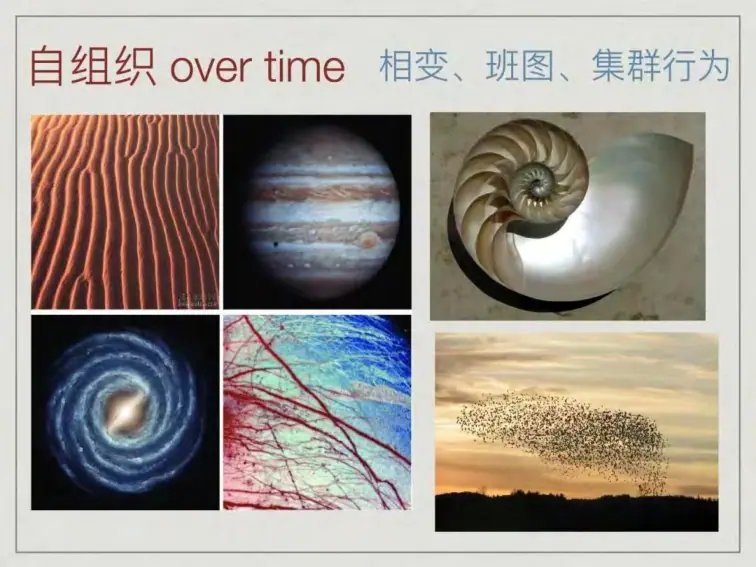
自组织很简单，什么意思呢？就是烧开水的时候，一个系统里面有水，你加热，外面热
量进来。所以你不能说你不加热，不加热的话水就在哪里干什么事呀？在那里睡觉，是吧？
所以学生也是这样的，你老师不去源源不断的推动他，给他信0望0爱的时候，给他能量的时
候，他能不能动起来呀？他不动，知道不？他在干什么事呀？SSH老师，他在干什么？
（睡觉。）
他绝对干他自己想干的事，是吧？跟你想要他出来什么特征是没有关系的。
那自组织是什么意思呢？就是只要你这个老师源源不断的给这些学生灌入信望爱，让这
些学生自己在那里知意情，在那里随机的碰撞，做作业的就做作业，骂娘的就骂娘，然后你
需不需要去指导他：你要去干什么！你要干什么……需不需要呀？
（不需要。）
对！他说你不需要，你只要像烧开水一样，不停地提供热量。大家知道，不停地加热量
就是什么意思呀？就是鼓励，这个叫——正向心理学（positive psychology），是什么
意思呢？就是你去鼓励他说：“你们真的很好，继续努力。”然后你就在精神上面做精神鼓
舞，就相当于烧开水加能量，懂了么？
（嗯！）
那这个课堂呢，可能就像这个烧开水一样在那里乱动。
（翻腾。）
对，翻腾了三十分钟之后会怎么啊？哎——你就会发现什么？
（岀来东西了）
这些学生竟然自动的什么了？
（安静了。）
不是自动安静了。你会发现这些学生自己竟然很有规律的：一些人在那里搞科学研究，
一些人在那里吃东西，整个课堂上就井井有条了，出现了规律一样。就像烧开水，开始那些
水在那里上下翻腾，后来冲过了那个临界点，然后水开了之后，你看到那些水就上下在进行
有规律性的，在那里的旋转了。SSH你是不是很希望这样的课堂出现啊？
（是啊！实在太想了。）
你不需要给他指导方向，对！你甚至不需要定规条，你需不需要惩罚他们啊？不需要。
你只要源源不断的给他们信望爱的时候，谁会不喜欢你啊？我们的学生都会喜欢你，因为你
就是给我们供能量嘛！打开电源，不停的加热、加热、加热，你说那个水吧，你给它加热的
时候，它会不会说“你怎样把我的能量拿走一些？”不行，是吧？这就好像你们家里乱七八
糟，但总是有人不停的送钱来的时候，后来整个家庭就显得很有规律了。
这就是我们所说的自组织理论。就是里面混沌，外部有能量输入的时候，叫做非平衡状
态，若打破这非平衡状态，那么这个系统开始是随机状态，然后过了一段时间冲破了它的临
界点之后，这个系统就呈现出有规律性的发展，这叫做自组织。
所以这个自组织现在被用到教育上。诺贝尔经济学奖得主哈耶克，他就认为国家不需要
指导我们买什么、吃什么，我们买什么，吃什么我们自己知道的，但是你真的知道吗？
比如说早上起来尿了一股尿，闻一下，有点臭味，然后洗了之后，就很干净了，然后造
出一首诗，然后就很多人买。你觉得......这个就是什么？就是随机嘛，对，喜欢的人就
买这首诗，不喜欢的人就不买。
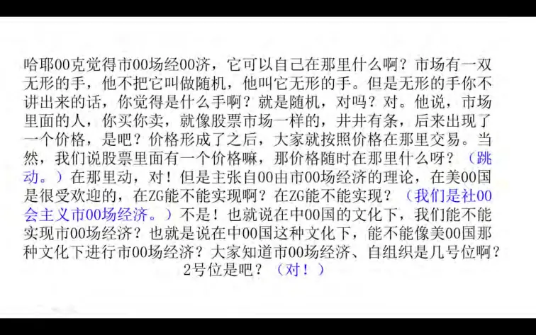
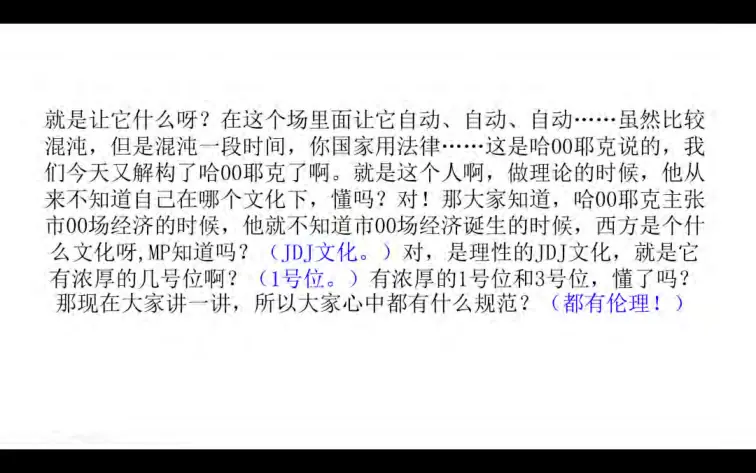
都有道德规范，是不是？那个SJ每天都要背，每个星期都要背，“不00可00偷盗，不
00可00杀00人，不可00嫉00妒......不可什么，不可什么......”你从小这样背的话，
那你稍微做一点点，你就“哎呀，做错了，不应该这样做”是不是？咱们有没有说不可嫉
妒，不可贪婪啊？你从小有没有人跟你说，你不可贪婪，有没有人这样讲啊？有没有呀？
（没有。）
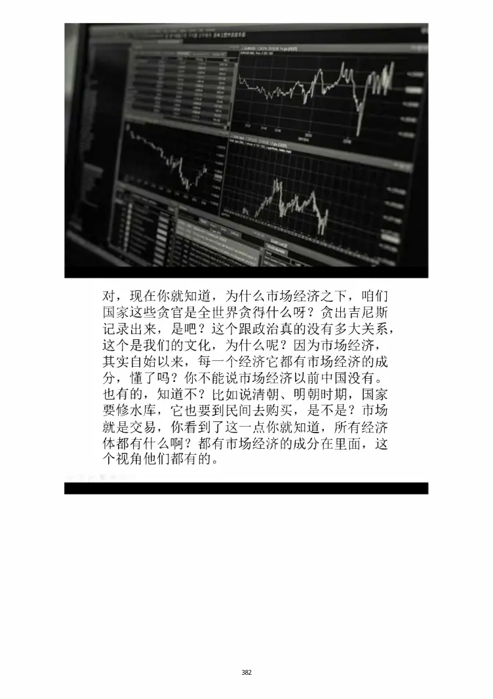
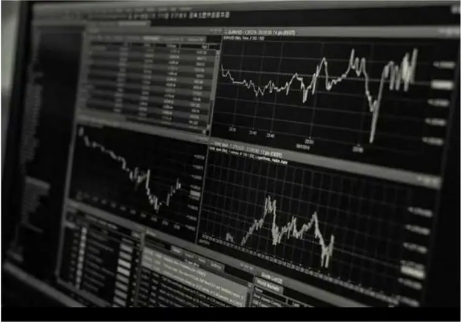
对，现在你就知道，为什么市场经济之下，
咱们国家这些贪官是全世界贪得什么呀？贪出吉尼斯记录出来，
是吧？这个跟政治真的没有多大关系，这个是我们的文化，为什么呢？因为市场经济，
其实自始以来，每一个经济它都有市场经济的成分，懂了吗？你不能说市场经济以前中国没有。
也有的，
知道不？比如说清朝、明朝时期，
国家要修水库，它也要到民间去购买，是不是？市场就是交易，你看到了这一点你就知道，所有经济体都有什么啊？都有市场经济的成分在里面，这个视角他们都有的。
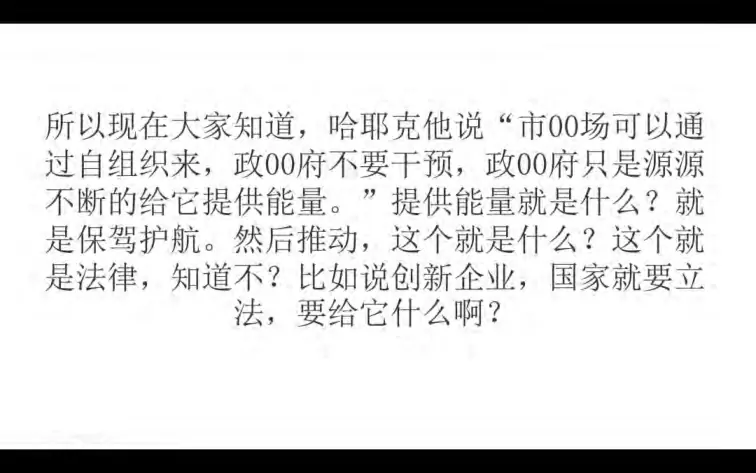
（鼓励，支持！）
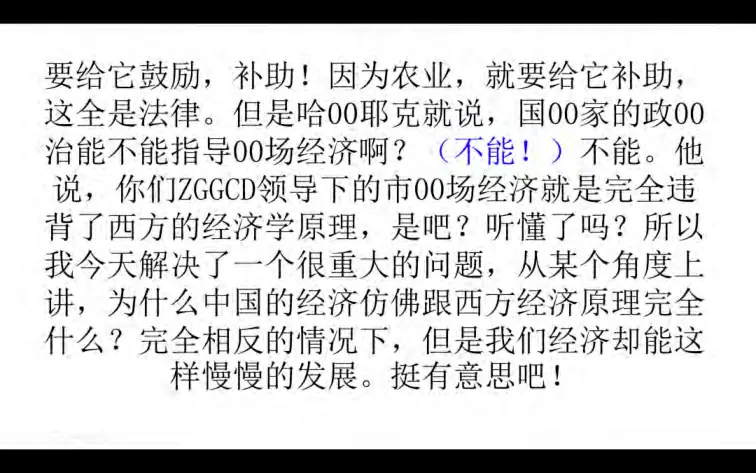
好，那么大家知道这个自组织原理在哪里出问题？你看它说，这水壶里面的水随机在那
里动，然后过一段时间之后就自动出来了一个规律，那大家知道我为什么要解构它吗？
FZW，我为什么要解构自组织呢？
（老师，我不太清楚。）
LJC，你知道吗？我为什么要解构自组织呢？
（这是不是后现代的一个现象？）
其实自组织和过程逻辑，是不是也是PK的啊？
（有相同的部分。）
互相PK的嘛，因为自组织也是讲规律怎么产生，特征怎么产生，懂吗？它的问题是什
么，它的问题是哪个预设有错误？
（场的预设。）
不是，自组织它里面描述的时候，有一个地方是出问题，叫什么？它说你烧开水时，能
量进去，然后呢？大家知道你烧的时候其实是产生一个什么？
（矛盾。）（热量。）
产生一个矛盾，知道不。就是你把水分子加热，它往上面走，上面的大气压就要把它什
么？
（压下去。）
对，压住，产生一个矛盾。那自主组织科学它知道吗？它不知道，懂吗？它只是说它是
个非平衡系统，它是个开放系统。然后它的描述是这里错了，就是‘你外面的能量进去之
后，它里面就随机运动。’它说的是随机，这个描述对不对啊，ZMP？
（不对。）
不对，大家知道随机有没有统一性在里面？
（没有。）
对，没有嘛。但是我们说过程逻辑具有随机性，是吧？但是还具有什么性啊？
（随机里面也有确定性。）
对，它还具有确定性。也就是说我们这个过程逻辑就告诉大家，真正的自组织是怎么产
生的，是吧？然后有没有自组织啊？
（没有。）
有没有说这个水就是它自己在那里，然后什么？
（是有矛盾才导致这样子的。）
有没有1号位在掌管它啊？
（有。）
有1号位，有一个粒子波场在那里掌管它，知道不？听懂了吗？
（嗯。）
这个发现，你们如果想去得诺贝尔奖，就走路，知道不？
（这个不是跟康德的那个哲学思想一样吗？）
对，所以大家就知道这个水你烧的时候，你加热量的时候，其实是产生矛盾，知道不？
然后对这个矛盾，那水分子它是不是要处理啊？
（对。）
水分子要处理矛盾，那你就会发现什么，一开始很随机，什么意思呢？就是水分子处理
的时候有两条路径，懂吗？一开始的时候是忍耐，懂了吗？但是忍耐的时候它就到处什么？
（到处蹿啊，跳啊。）
它就到处乱跑一样的，这时到达一定程度的时候，有些水分子就会因为你给矛盾的时候
也比较随机，你加热的时候有一些加得比较热，有一些就没那么热，那这时你就会发现什
么？
（温度不齐。）
有一些能不能冲破那个外面的阻碍啊？
（不能。）
所以你就会发现那些水分子有一些就上来，然后有一些去旁边，是吧？也就是说，实际
上它解决这个矛盾的时候，它最开始是有忍耐的阶段，知道不？那后来只有小部分在忍耐，
大部分就不能忍耐。现在你就知道，遇到矛盾的时候，我们有几种方式啊？
（三种）
三种，一是忍耐，然后两种模式转换，是不是？那么在烧开水的时候，它也是一样的，
你不要以为烧开了的时候，所有的水分子都会一起来。有些水分子还可以忍，知道不？
（哈哈哈。）
还可以忍就是它里面的速度还会加速。所以这个时候你会发现，其实这个忍耐模式在对
付矛盾的时候，在转换的时候，它也是三个角度，知道不？再后来到了后面越来越大的时
候，你就会发现有一些就不能忍了，是吧？那这个时候有一些就出来，然后还有一些又会下
去，知道不？明白吗？就是有上来又有下去的，有上来又有下去的，这个叫做第二个阶段。
那么最后一个阶段你就会发现上来的是什么？
（变成汽。）
（冲出来。）
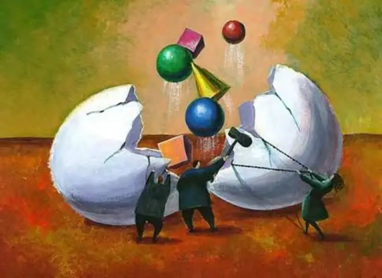
那它为什么会这么转呢，这有意思吧？它转一定是有两种模式，懂吗？一种往上，一种
往下，才能形成一种旋转，知道不？也就是说这个水最终解决模式的时候，它有两种模式，
一种是冲破往上，一种往下，才形成这个旋转，懂了吗？
大家想一想，你把这个东西证明出来了，然后去做很多实验，做微观的实验，我保准你
得个大奖，知道不？因为现在自组织他们还不能解释它为什么转，懂吗？虽然我的是一个猜想，但是我的很多猜想都会什么？
（八九不离十的，哈哈哈。）（变成现实。）
而且你成功解构了这个的话，其他的自然规律的形成，你都会做了，知道不？大家想一
想，如果你把F=MA牛顿的那个重力公式，把它是怎么形成弄出来的话，哇。。。
（轰动全世界。）
这个我不知道，但很多人可能什么，可能要自杀了，知道不？哈哈哈。
（老师您这么一讲，就打破了我对科学的迷00信。我就想老师用这个烧开水举例，那现
在科学这么发达，连烧开水这么一个事情也解释不了，还是空白。所以说到现在的科学这么
发达，它发达到哪里去啊？）
现在的科学它不是研究这个，它研究怎么做实践，怎么烧，烧多少，他检测一下；你这
个地方到那个地方，记录一些数据，在什么大气压之下；然后开水烧到多少开了，把它记录
下来。这样就发表论文，知道不？在某某地方，在多少大气压下面，然后水烧多少开了，这
个就是科学规律，你看，哈哈哈……
（这个好像是它本来就有的，不需要我们去确定的。）
所以现在叫发现嘛，哈哈。其实不是发明，就是对一些数据做一个总结。所以你现在才
知道什么是真正的科学创新了吧？对，科学创新不是“那个”，知道不？不是去搞数据。所
以现在很多人说大数据帮助我们发现自然规律，就是他预测了他的科学就是做数据检测，然
后把数据结果拿出来。所以说到人工智能，你看我有很多数学同仁都基于这种科学的解释，
说人工智能的数学将来要指导大家做科学发现，它不叫科学发现，叫指导大家做科研创新。
哇！
（那这首先它预设它的科研创新的那个内容，或者叫做定义，就需要重新更新。）
这个就是你去问牛顿，F为什么等于MA？牛顿能解释吗？牛顿说我只是个幸运儿，那个
苹果正好打着我，我就称一下那个苹果多重？速度多少？哎呀，一看，正好凑合，于是F=MA
了。
(也就是说现在的科学研究是没有过程的。)
对，所以大家想一想，你从科学里面能不能得到智慧啊，你得不到，是吧？那大家想一
想，就是刚才我讲的烧开水的这个过程，他隐藏的是什么？他能解释，比如说这个课堂上，
为什么我们迟迟不能自组织产生规律？
（一个道理，课堂的水不开，哈哈。）
然后这个问题就可以问市00场00经济，为什么在美00国的市00场经00济能够健康的运
行下去，在中00国的市00场00经济却是很难的？你看，这个就告诉你，同样一个烧开水就
可以用到另外两个学科上去，这才叫什么？智慧！
怎么样？过瘾吗？
（过瘾过瘾。）
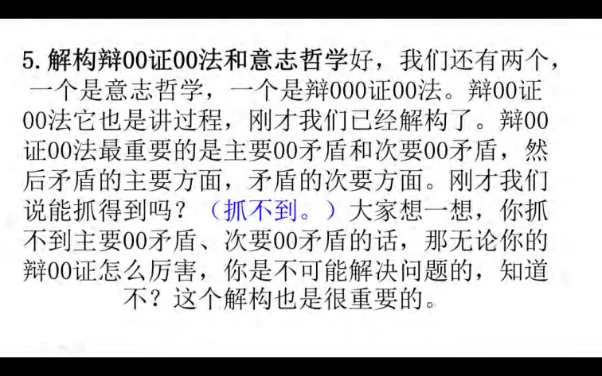
剩下的就是意志哲学，意志哲学是什么意思呢？就是说一切都是选择。你看，他这个说
法是不是告诉我们选择是一个视角？
（嗯）
很重要，为什么呢？因为一个过程逻辑里面就有这个模式选择，一切都是选择。但是反
过来，说‘所有的都叫选择’，可不可以？
（不可以的。）
不可以，知道不。也就是什么意思？如果你说选择，我就会问你，怎么选？何时选？是
不是一定要选？你看，比如说你跑步的时候，像今天我第一次跑12公里，是不是跑步一遇到
不舒服了，然后你就要改，就要选啊？
(不一定。)
如果是这样随时改变选择的话，我能从300米，从500米跑到12公里吗？
(不能。)
不能。也就是说我们面对矛盾的时候，我们有个很重要的视角叫忍耐。那大家想一想，
这个忍耐在这个意志哲学里面，它就没体现出来。它就只知道到达一定程度的时候，它就选
择。也就是这个选择，这个矛盾，这个晕痛苦，这里有谁的影响在里面啊？
（主体，人！）
人！知道不？也就说意志哲学，叔本华、尼采和后面的一些人，他们有现实九宫格吗？
（没有。）
对，他们没有。所以你看到叔本华讲的那个例子，你就知道他在讲什么话，知道不？他
说：“你看很多种子埋在地里几年都不发芽，然后过了第三年就突然发芽，这是为了什么？
是为了生存，这个种子就是有选择。”大家想一想，他哪里讲对了？种子是有选择，是吧？
（对。）
但是种子是不是只为了生存啊？
（不一定。）
对，不一定的，知道不。种子为了生存，但是我们人是不是为了生存？
（那就更不一定。）
对，也就是什么意思呢？也就是说种子也好，人也好，我们面对矛盾的时候，我们有三
个视角，有忍耐，有另外两个选择，是吧？但不是所有的选择都是为了‘我要生存下来’，
是不是？明白吗？这个很重要，知道不？！这样你才能解释，为什么有的人可以舍生取义，
为什么有的人看到小孩被洪水冲走了之后，他也会跳下去救人，知道吗？
这个时候你就不能说是为了生存，你只能解释实际上那时刻他最大的矛盾是什么？就是
如果不跳下去，他能忍耐那个矛盾吗？那时不能忍了。
（对，会内心不安。）
所以现在你才知道我们做事的时候，不是说因为你的欲望，看哪个欲望最大才去做事，
不是的！而是什么？而是看哪个矛盾超越你最大的忍耐程度的时候，你就必须来处理那个事
情，懂了吗？你的行动就朝着那个方向。就是这个矛盾跟你的忍耐度的比值越大的，这个矛
盾就必须先处理。对，挺有意思吧？
（一个全新的解读诠释。）
这个很重要，是非常重要的！可以帮助你去分析你孩子的行为，我们每个人的抉择行
为。就是为什么有的时候我们能忍住，有的时候不能忍住，是吧？这个时候你就会知道，比
如说你的孩子开始一点都不能忍，后来你慢慢的怎么样让他能忍。对，但是我告诉你，如果
什么都忍的话，好不好啊？
（也不好。）
（人也要有方向。）
你什么都忍的话，你还有发展吗？
（没了。）
懂吗？对，就很简单，比如你跑步一直忍耐下去，最后是什么结果？！听懂了吗？
（那老师你说的这个现象，就是有一些运动场上某些人，他就一直跑，加油啊，然后突
然之间到那个地方就倒下了，他就死了，猝死。就属于这种现象。）
他把很多矛盾积累起来了，然后，一起冲破那个界限，他整个身体就倒了嘛！这就告诉
我们身体里面处理矛盾的时候，它也是一样的，它晕痛苦的矛盾是什么，它是分阶段性来处
理的。比如说你跑跑跑，跑晕了，怎么办？这个时候你就要怎么办？
（停下来，深呼吸。）
如果你晕了，你降低速度，也晕。这个时候你就要停下来了。
（停下来呼吸）
对，这个时候你不能再跑了。你如果再跑，再忍耐，再忍耐...最后就怎么？
（倒下了。）
最后就脑溢血知道不？最后就脑和心脏会死掉，知道不？为什么？晕是什么意思，大家
知道吗？
（晕是呼吸和循环之间的矛盾达到了一个极限。）
晕，就是你的脑袋缺血、缺氧，知道不？缺血和缺氧是一样的。大家知道为什么吗？
（因为是那个血红蛋白携载氧气。）
因为血不会给你其它东西，血就是给你运氧嘛，听明白了吗？血红蛋白就是装载氧的。
如果你有一点点晕，你就放慢速度，加快呼吸。如果晕没有了的时候，再继续。如果你大晕
的时候，你就要坐下来，加快呼吸。知道不？你晕的时候喝糖水有用吗？
（没有用）
没有多大用，因为它是缺氧。也有一点点用，但是它不会那么快。知道不？糖从你的
胃，到你的血管，再到你的细胞里，要用很长的时间。也就是说，不会因为你缺糖而晕，懂
了吗？我看很多人说，哎呀，晕了晕了，赶紧喝点糖水，呵呵。
（如果低血糖，手发抖、发冷汗，那个时候喝糖水有用。如果只是晕，喝糖水是没有用
的。）
我看他不是晕的嘛，他那是能量产生ATP不够。
三、师生问对
我们解构了六个体系，大家有什么反馈吗？
（老师我有个问题，就是刚才老师在解这个实用主义的时候，让我想到这个矛盾有静态
的矛盾，波的矛盾和场的矛盾。刚才老师说这个晕，痛，苦之间也有矛盾，是不是用这个场
的视角，或者就是矛盾的分布视角，矛盾之间的关系、影响？）
这么说吧，苦呢，往往是从场的角度来说；痛呢，往往是从波的角度来说，我们说不通
则痛。然后晕就是方向、粒子、目标，就是从粒子的角度看。我们好像已经没有多的词语进
行解释了，晕痛苦用完了之后，我们只能用英文了。我们不用晕痛苦这三个词语，还有什么
语词包括晕痛苦的吗？难受？英文叫suffer，看怎么样去把它翻译一下。Suffer，也可以
说是背十00字00架。晕是一种十00字00架，痛是一种十00字00架，苦是一种十00字00架。
（老师，是否可以这样理解：实用主义是因为忽视过程逻辑只看眼前，就是他们目光短
浅，就是不能长远看问题。）
比如说你在概念世界里面发明了很多所谓的知识，那这个是真知识还是假知识呢？我要
用到现实中来，要能帮助我们解决晕、痛、苦。
但是实用主义的问题是什么？因为它把一号位抹掉了，懂吗？它把本体论抹掉了之后，
这个时候你就会发现它对晕痛苦，它知道它们是三个视角吗？
（不知道。）
不知道了。它知道晕痛苦之间它们是有时间差距性的吗？知道吗？它也不知道。这个时
候，它只能把晕痛苦拉到同一个平面里来处理。明白了吗？
但是它们又不知道现实九宫格，又不知道晕痛苦其实是跟我们主体的忍耐度直接相关
的。这个时候就造成了什么?就造成它在使用这个理论来处理矛盾的时候，如果有三个矛盾,
那它就分不清哪个是主要矛盾，哪个是次要矛盾。懂吗？
（嗯，分不清哪个是重要的，哪个是紧急的。）
对，是很难分清的，重要的、紧急的不知道怎么区分。我们不是有一个四象限吗？那个
紧急其实是表示我很难忍耐，是吧？
但是今天我们不是解构了吗？什么是真正的紧急，就是紧急和重要产生矛盾了。重要是
说这个粒子波场的冲突，重要是说碰撞、干扰和对垒它们哪一个更加侧重，粒子、波、场哪
一个是侧重的。
但是实用主义它否定了1号位，它就不会假设有粒子波场这样的一个本体，这样一个暂
时的本体，它都不会预设的。这个时候它就很难抓住重要，抓不住重要，也抓不住紧急。
所以紧急和重要的那些理论是挺好的。但是在你的生活中你会发现，这个也重要，那个
也重要，这个也紧急，那个也紧急。
（就是说，没有一个东西能去评估和衡量它怎么叫紧急，怎么叫重要。）
因为这个要过程逻辑和本体论加起来，你才能清楚哪个叫紧急，哪个叫重要。所以他的
理论是不是很好啊？越重要的，越紧急的，那当然越提前处理。所以现在你才知道什么叫做
理论创新。我不想叫理论创新，而想叫理想创新，知道不。
（交叉起来就是创新。）
你看现在我们的工具是不是越来越核武器了？轻而易举解构这个四象限。
（越来越犀利了。）
以前我们还很难解构。好！YY，MP和LX，你们三个人组建一个小组，把视频给大家分
发一下。然后，YY你有组织的经验嘛，MP应该也有，你们很多人都整理过的，然后我给你们
两个星期，有问题吗？
（没有问题。）
你们有十几个人，11个人是吗？群里面有多少个人啊？
（12个人，今天听课就有12个人。）
12个人足够了。这个很重要，你们要反复地去听，看我是怎么样解构的。我没有每个体
系都用同等的力量去解构，有些你们要细致地、深入地挖。好，你们还有什么问题吗？
（老师您所指的再细致深入地挖，是指整理的过程当中，后面再发表感想的时候，去把
它汇总出来吗？）
你们去整理的时候，要在六个方面去找些书，在网上再去学习一下。知道不，懂吗？
(老师，我有一个问题一直想问，就是矛盾与过程逻辑和矛盾性人格是怎样一个关系？
矛盾人格是怎样出来创造力的?）
这个很简单，比如说你是矛盾人格，就是在别人听起来你经常讲矛盾的话呀，做矛盾
的事啊，懂吗？你不做矛盾的事，不讲矛盾的话，怎么会出来创造力呢？
（那跟我们这个四平八稳，感觉不一样。）
那肯定就出不来嘛！这个我上次讲过一堂课啊。我说了，真正懂创造力是怎么产生的
人，目前还只有一个，叫米哈里，知道不？
他讲心流，他首次解构了创造力的人格一定要是个矛盾的人格，就是既内向又外
向，既安静又歇斯底里，当然是不同时刻！
（既感性又理性。）
既感性又理性，知道不？总之，要让别人觉得你是精神分裂。
（那在我们的中华文化，接受不了这样的人。）
（这样的人在现实生活当中别人接受不了，在心理学上还把它作为一个重要的病症加以
分析。）
这种人他不是同时（矛盾），他这会儿冷静，他过一段时间就......。比如说W老师，
现在我很关心周围的人是不是听我的话，但是过一段时间，好像你们又不存在一样的。知
道不，懂吗？它是有个时间，有个转换的。我刚才说了嘛，这正是人类理性的罪，人的理性
就喜欢把各个时间压缩成一个点。
（啊，压缩到一起，缺少过程逻辑。）
（人性里面讲三重矛盾，三重矛盾就是用过程、用时间来协调这个矛盾。）
对，有一点点过程逻辑的味道了。
（就好比说，你在这个阶段要干什么，做了一段时间又发现，这是个矛盾，要换一个环
境，要协调这个.......）
对，对对！但是我们喜欢说：“你看他昨天内向，前天又外向，这个不是精神分裂
吗？”好像他要么所有的时候都要内向，要么所有的时候都要外向才对。
（对，这个就拉到平面上来讨论了。）
不是。因为他是静态思维，他是本质思维。
（是我们的认知思维、认知模式出了问题。）
（他也是要在不同的时候解决不同的矛盾，才要内向，才要外向。）
对，那当然啦！但是他们不懂这些嘛！也就是说，现在的心理学，它也是静态思维嘛。
（那就是说，人的这个本体论，真实的人的本体论，它就是矛盾着的？）
对，它就是矛盾，它就转动起来了嘛！所以三视角是不一样的，它本身就蕴含着一种转
动性。也就是说本体论、发展论、价值论，转动性是不能离开的。你理解本体的时候，就要
知道这个本体它是不停地在发展,它中间有侧重的表现。
（那有矛盾性格人，一定是非常有活力的人?）
当然咯!你如果没有矛盾，也就不会去推动你做一些事。其实每个人都会有矛盾，但是
我们大部分的矛盾都是用来走路，是不是？左右，左右，就是矛盾。但即便是走路，我们也
没用好这个矛盾，最后它变成了规定。比如小孩走路就应该像这样，两只脚有多宽，前后距
离多宽，手臂该怎么摆，就试图把所有的矛盾都抹掉。
其实矛盾应该是个中性词，知道不？懂了吗？本来矛盾就是个中性词，因为我们所处的
生活里面，解决矛盾的时候往往是用revolution，所以看到矛盾我们就害怕了，是吧？
（是的。）（哈哈，文00化导致的。）
大家知道，对付矛盾用revolution是什么意思？就是直接把矛盾杀死。那个叫不叫处
理矛盾啊？那不是，它会造成资源的浪费吧，是吧？
（对。）
就好像说，你现在腿痛，那就干脆把腿砍掉，知道不？大家想，这种革命的方式能不能
解决矛盾，能不能真正地灭掉矛盾？不可能的。矛盾是永远源源不断地在那里存在。如果没
有的话，那这个世界就是静止的，就是死的。
（老师，我突然想到，这个幽默和这个矛盾很接近。无论是性情、性格方面，还是内
向、外向方面，我们有冷幽默、热幽默。但是我们平常生活就不存在这种常态现象。）
啊，对，你没有幽默，就是你所讲的话，所做的事，别人都觉得可预测。
（成惯性了。）
幽默有几个特征，合起来就叫做幽默。第一个是，幽默就是一开始看起来你很不合逻
辑，很愚蠢。然后呢，想一想，还很有道理，觉得你很有智慧。产生这样一种突兀，就觉得
你这个人是故意创造出来的一种行为，是一种行为、创造、创新一样的，所以我们就说你很
幽默。幽默这个词好像不好解释，幽和默都不好解释。
（好像突然迸发出来的惊喜。）
它有很多。好，谢谢大家！
（谢谢老师！）
四、视频整理学员感想
李佳城：
老师一次解构佛学、过程哲学、意志哲学、实用主义、辩证法和自组织这六大
体系。老师如同庖丁解牛，对于我想都不敢想；老师随手拈来，让才疏学浅的我眼花缭乱。
王老师鼓励我们学会怎样解构，听的我懵懵懂懂，但明白了解构的总体方向就是要把那
些要解构的东西挂在123号位上面。了解它能帮助人们在什么情况下解决晕、痛、苦中的哪
一个。听老师的课，这些宏大的理论离我不再遥远和陌生，也相信解决人类的问题，三视角
理论是这个时代困境中的解药，可以帮助有心人重生。
周迎志：
随着321智慧的越来越走进水深之处。这黑匣子一样的世界诸多存在，逐渐露出来，令
人万分惊喜！
一个F教都有万千法门，其他的J派也是玄妙莫测。原来他们都是在三一逻辑的掌管之
下，莫能例外。
瞬间体会到孔子“登东山，而小鲁；登泰山，而小天下。”心境。
加油！吾辈太有福！碰上了321智慧和发明人。
赵明朋：
老师这次课程再次帮我们梳理了使用三视角智慧解构的方法，令我深受启发，十分宝
贵。
第一是解构的目标。这个理论属于几号位，它能帮助我们在什么情况下解决什么晕痛苦
中的哪一个？它有没有真正解决。第二是解构的技巧。要去剖析对方的理论不得不使用而又
缺失的视角内容。也就是揭露他的偷盗行为。第三是解构的价值。解构不是一味的否定而
已，而是要发现该理论在这个视角上取得了哪些研究成果？它在哪些条件下才可以奏效？在
哪些条件下会失效。
更好地去实践以上三点，才能实现真正的批判和继承。
张奕全：
要问治病有何良方？而不是头痛医头，脚痛医脚，治好了这个病，却意想不到地产生了
其他的病痛症状？三视角智慧始终是探照灯，联动轴，纠偏器，我见证了每一次课堂无一例
外都会体现这样宝贵的价值。对于6大理论体系的解构，老师再次用尖刀利刃，通过过程逻
辑剖析各大体系固守中心主义的要害和缺失，反映了各自极其深刻的自相矛盾的地方，让我
常能感觉这样的释然和痛快。心想历史上任何一种理论体系，都是在三视角智慧无限广阔的
天地下画地为牢，傲恃山头，互相厮杀的据理力争都显得那么苍白和悲凉；回归缺一不可的
321智慧庞大活力的体系，才是坦途正路。
于子越:
看老师解构经典，很过瘾。以前读书要不就为了读懂而读懂，经典就直接拿来，混淆着
各种知识，给别人开药方。
如今再看老师解构，才发现对事情的认识缺少视角，早晚会出问题，也很难理解别人，
更别说真正给别人解决问题。
解构可以发生在这些大牛的理论身上，也可以是日常生活。
还需要更加沉住气，一点点拆解遇到的每个活生生的素材，日日磨练，谢谢老师让我感
受到自己是多么无知，同时也激发无尽的好奇。
黄倩盈：
过程哲学的那部分，讲到的过程流程化真的很常见，是熟悉的工作场景了。记录一些话
作为理解过程逻辑的锚点吧——“过程哲学并不真正明白过程。”“晕痛苦也是一个发生发
展的过程。”“实用主义的问题，根据这个主题对他这个晕痛苦的一种感受来决定。”“面
对矛盾的时候，有个很重要的视角叫忍耐。”“如果没有矛盾，也就不会推动你的一些事
了。”
整理完的感受是——要想行动起来就创造他所不能忍的矛盾吧！一直觉得能忍是个优
点，现在看来，不一定了。想活得更鲜活，还是要矛盾起来啊。
朱晗涛：
矛盾是过程逻辑，是变化，是永远不变的变。我们很想把生活、工作、事业中的矛盾固
定化、程序化、规范化、程式化等。实际上就是想抹杀矛盾的功能和特性或者说不想要矛
盾，想把我们的一切甚至是和我们有交际的一切都井井有条去实现我们目标；也就是把矛盾
中间的过程逻辑变成没有。不过，这是不可能的。
代丰畅：
人类文明中哲学、科学、shen学，那么多派别观点理论是基于什么产生的解决了什么
问题，又带来了什么问题？他们的认知边界在哪里？是否有解构与终极辩00证他们的认识工
具呢？通过这堂三视角对哲学思想的大解构给这些疑问都带来了答案，也让生活中的种种模
式的对与错变的有迹可循，不再机械。
严筱：
没有接触王老师和三视角智慧之前，我都不敢想象高高在上，玄之又玄的佛学、哲
学、辩证法还可以被解构。
但在老师的层层剖析下，又觉得一切都是那么理所当然，直指这些学问体系的不足和缺
憾。三一逻辑、粒子波场三视角理论就像是核武器，见佛杀佛，见魔杀魔，让人畅快淋漓。
老师说好多人都亲闻过三视角，但坚持下来的不多，我是后来者，接触的时间不长，但
已经见证了它的威力，我要坚持下来，跟王老师一样做一个活明白的人。
阳涌：
经过多次的视频整理，我发现老师的每一次课都是一个巨大的藏宝库。如果只是课上听
一次，很多宝藏都会错过。而通过视频整理时的反复学习，每一遍都会有不同的收获。本次
整理我是读到第三遍时，才意识到，老师说实用主义的一个主要问题与邓爷爷关于改革开
放某个观点的联系：
实用主义认为，“只要能解决问题就是真理”，就像“不管白猫、黑猫，只要能抓到
老鼠就是好猫”。在改革开放时，我们把猫的使命单一化了，只有抓老鼠；我们也把猫抓老
鼠过程中需要注意的事项忽略了。结果，所有的猫都去抓老鼠去了，忘记陪爱猫、猫崽晒太
阳，也让主人没机会撸猫了；猫抓老鼠时把家里的花瓶、电脑、重要文件等都弄坏了。这样
的猫还算不算好猫呢？这样的猫还是在实践真理吗？
毛萍：
王老师指出在解构一套理论的时候，如果不能真正解决晕痛苦那就没有价值，只有运用
三视角智慧的过程逻辑和现实九宫格解构才能解决矛盾，拨云见日，否则还是纸上谈兵，今
天再一次见证三视角智慧的威力！
吴乾芬：
听老师说“解构”这次词说了很久了，但像这堂课这样清楚的告诉我们解构的目标、解
构的技巧和解构的价值还是头一次。而且老师还通过解构六大体系，让我们去体会过程逻
辑，带我们去发现各理论的问题，用现实九宫格去解构，并让我们看到解决问题的希望。我
觉得这就是做科研的目标，这就是做科研的技巧，这就是做科研的价值，让我看到科学创新
的可能性！

付自文：
以前从来没有想过，佛学、过程哲学、实用主义、自组织、辩证法和意志哲学竟然可
以被放在一起来讨论。之前会觉得，每一个思想体系都庞大到进去以后都出不来，这次的视
频课，却让我感受到，原来每个思想都会有个命门，这个命门就是它侧重于何种视角去理解
存在。在王博士的引领下的这个发现，让我慢慢感到了一种冲破文字，直抵事物存在的自由
感。希望有一天，我能全然地拥有这样的自由！
郑惠娟：
老师用321智慧体系，三一逻辑，现实九宫格……来解构佛00学、过程哲学、意志哲
学、实用主义、辩证法和自组织以2号位侧重为主的这六大体。随着321智慧的不断深
入发展，深深的体会到她的与众不同，无与伦比，精妙绝伦，颠覆三观……真不知道用什么
词汇才能表达……以前听这样的课总是晕晕乎乎只想睡觉，现在终于有了在混沌中看到署光
的幸福感！感恩！
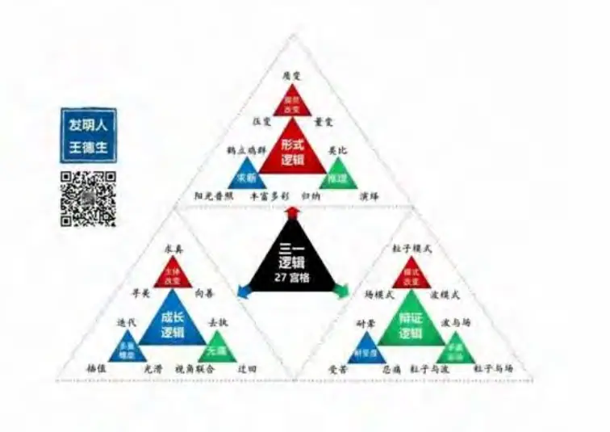